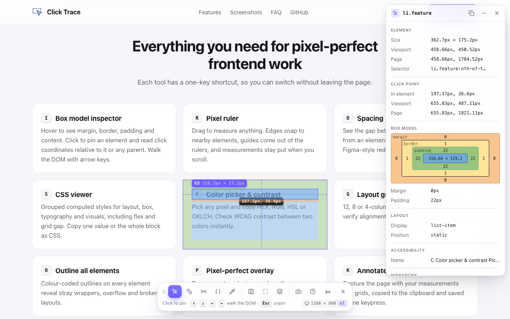
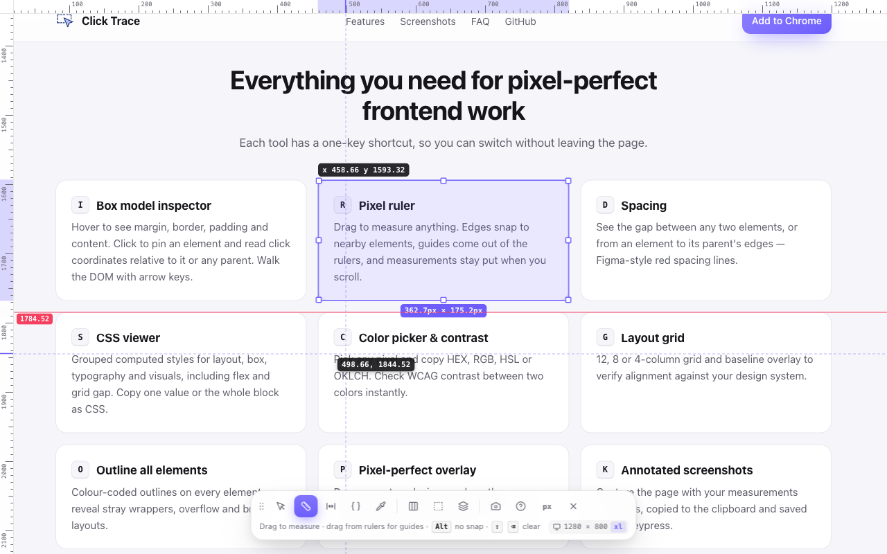
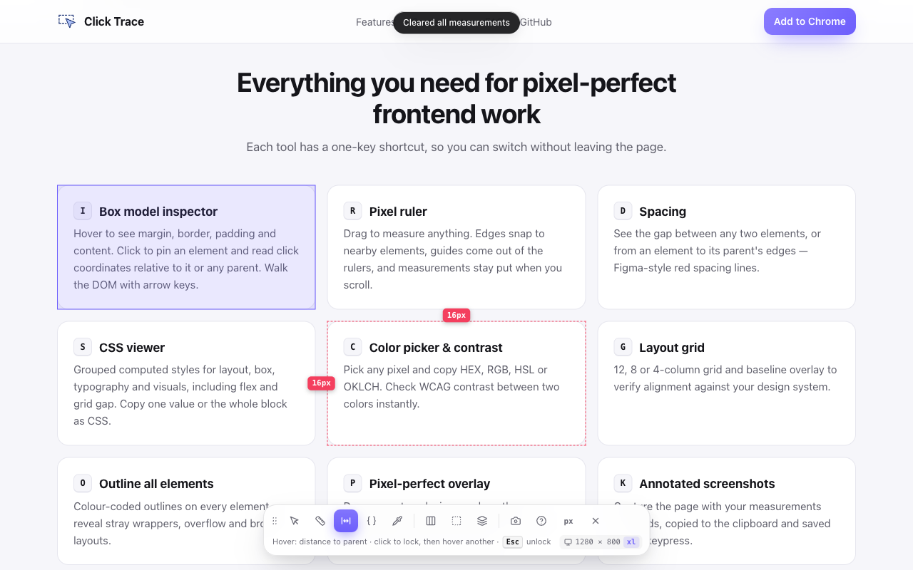
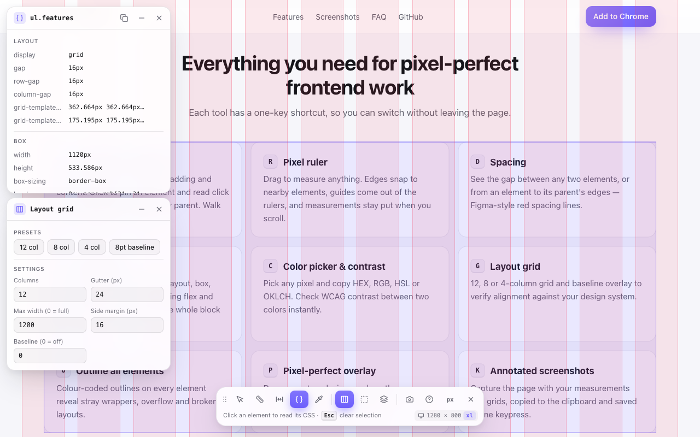

Inspect, measure and trace any element — without DevTools
Click Trace is a free Chrome extension for frontend developers and designers. See the box model, measure with a snapping pixel ruler, check spacing and contrast, and compare the page with your design mockup.
Works in Chrome, Edge, Brave and Arc · No account · No tracking

Everything you need for pixel-perfect frontend work
Each tool has a one-key shortcut, so you can switch without leaving the page.
-
I Box model inspector
Hover to see margin, border, padding and content. Click to pin an element and read click coordinates relative to it or any parent. Walk the DOM with arrow keys.
-
R Pixel ruler
Drag to measure anything. Edges snap to nearby elements, guides come out of the rulers, and measurements stay put when you scroll.
-
D Spacing
See the gap between any two elements, or from an element to its parent's edges — Figma-style red spacing lines.
-
S CSS viewer
Grouped computed styles for layout, box, typography and visuals, including flex and grid gap. Copy one value or the whole block as CSS.
-
C Color picker & contrast
Pick any pixel and copy HEX, RGB, HSL or OKLCH. Check WCAG contrast between two colors instantly.
-
G Layout grid
12, 8 or 4-column grid and baseline overlay to verify alignment against your design system.
-
O Outline all elements
Colour-coded outlines on every element reveal stray wrappers, overflow and broken layouts.
-
P Pixel-perfect overlay
Drop or paste a design mockup, then compare with opacity or difference blending. Supports @2x and @3x exports.
-
K Annotated screenshots
Capture the page with your measurements and grids, copied to the clipboard and saved in one keypress.
See it in action
A clean, theme-aware overlay that never fights the page's own styles.



Built to work on real-world sites
Click Trace fixes the most common problems with page-inspection extensions.
Always on top
The overlay lives in the browser's top layer, so modals, popovers and huge z-index values can't hide it.
Never breaks
Shadow DOM isolation means CSS resets and site styles can't distort the toolbar or panels.
No accidental clicks
While you measure, clicks are captured so links and buttons don't fire.
Private by design
Runs only when you open it, needs only the activeTab permission, and sends nothing anywhere.
Frequently asked questions
Is Click Trace free?
Yes. Every tool in Click Trace is free to use.
Does Click Trace collect my data?
No. Click Trace makes no network requests and collects no data. Settings are stored locally in your browser, and screenshots are saved only to your computer. Read the privacy policy.
Why does Click Trace only need the activeTab permission?
Click Trace only runs on a page after you open it from the toolbar or with a keyboard shortcut. It does not read or change any page until you ask it to.
Can I measure in rem or percent instead of pixels?
Yes. Press U on the page, or change the unit in the popup, to switch every measurement between px, rem and percent of the viewport.
Does it work on pages with modal dialogs and web components?
Yes. The overlay renders in the browser's top layer, so it stays above and usable over modal dialogs, and it can inspect elements inside open shadow roots.
Ship pixel-perfect UIs faster
Install Click Trace and press I on any page.
Add to Chrome — it’s free